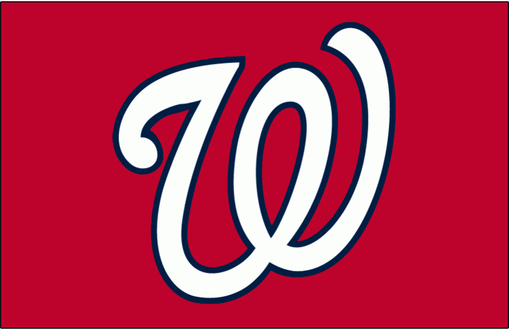

The Nationals were known as the Montreal Expos who were founded in 1969. They moved to Washington D.C. in 2005. The team struggled after moving there, but they finally made the playoffs as the Nationals in 2012. They won the NL East that year as well as 2014, 2016, and 2017. However, they were not able to advance past the National League Division Series in all of those years. In 2019, they made the playoffs as a wild card team for the first time as the Nationals. They finally made it past the NLDS and subsequently won their first World Series in franchise history, defeating the Astros in seven games.
